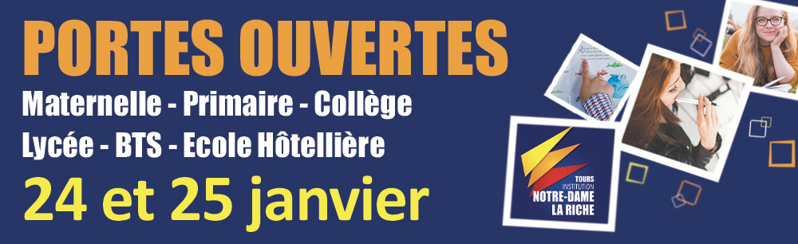
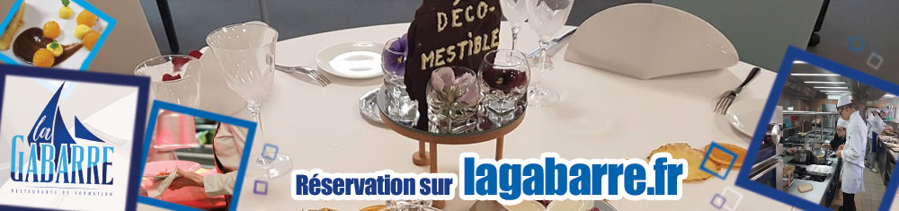
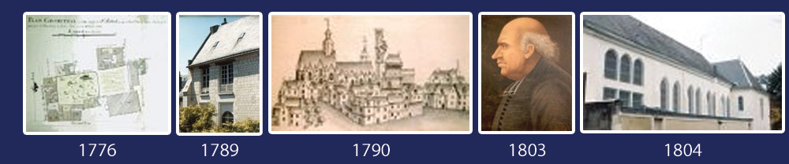

Au Sommaire :
> Un nouveau site web
> Les établissements vous ouvrent leurs portes
> Taxe d'apprentissage
> La Gabarre, Restaurant de formation, vous connaissez ?
> Un peu d'histoire...
Edito Benoît VISSE
J'ai le plaisir de vous envoyer le premier numéro de cette Info'News de l'Institution Notre-Dame La Riche au format électronique.
Cette Info'News a pour vocation d'être diffusée 4 à 5 fois dans l'année, soit environ tous les 2, 3 mois.
Elle vient compléter le nouveau site web mis en place depuis le début de l'année, plus clair, adaptable à tous les écrans et plus moderne. Ce site sera enrichi tout au long de ce premier trimestre. Je vous invite à le visiter sur notredamelariche.fr. N'hésitez pas à nous faire part de vos remarques et suggestions via le formulaire de contact ou sur les réseaux sociaux que ce soit sur Facebook, Google, LinkedIn...
Ancrée au centre de la ville de Tours, l’Institution Notre-Dame La Riche œuvre depuis des décennies à l’épanouissement des jeunes. C'est pourquoi, il nous a paru important de vous “conter” l'histoire de notre Institution, vous trouverez la première partie de notre histoire en bas de cette lettre d'information.
Aujourd'hui, de la Maternelle à l’Enseignement Supérieur, le parcours proposé par les différents établissements de notre Institution s’inscrit dans une cohérence pédagogique et éducative sur le plan scolaire, mais également dans le développement personnel de chaque jeune. Les Portes ouvertes organisées les vendredi 24 et samedi 25 janvier sont un bon moyen de venir vous en rendre compte par vous-mêmes.
Bien former les jeunes, c'est également leur proposer les moyens de mettre en pratique ce qu'ils apprennent, c'est pour cela que Notre-Dame la Riche a créé une agence de voyage pédagogique que vous pourrez découvrir dans le prochain numéro et La Gabarre qui est un restaurant de formation pour nos lycéens et étudiants de l'école Hôtelière. Je vous invite à lire l'article consacré dans cette newsletter.
Bonne année à toutes et tous, au plaisir d'échanger et n'hésitez pas à nous faire part de vos remarques, avis ou suggestions...
Benoît VISSE
Directeur Coordinateur de l'Institution Notre-Dame La Riche
Un nouveau site web pour Notre-Dame la Riche
Depuis le 1er janvier, si vous allez sur notredamelariche.fr, vous pouvez découvrir notre nouveau site web. L'ancien reste encore en ligne dans l'immédiat, mais il est appelé à disparaître très vite.
Ce nouveau site internet est responsive, c'est-à-dire qu'il s'adapte à l'écran sur lequel vous le regardez que ce soir sur un ordinateur, un Smartphone ou une télé. Son design s'est également modernisé pour être plus dans la tendance actuelle et il se charge très rapidement.
Par rapport au précédent, il est beaucoup plus orienté sur les formations proposées par les différents établissements de Notre-Dame La Riche.
Sous l'onglet Institution, vous y trouverez le projet éducatif, la présentation de l'Institution, le Pôle Solidarité, le Dispositif allophones, le Collège et lycée deuxième chance...
N'hésitez pas à y faire un tour et utilisez le formulaire contact pour nous faire part de vos remarques, de propositions d'amélioration ou tout simplement d'émettre votre avis.
Bonne visite !
L'Institution Notre-Dame La Riche vous ouvre ses portes

Le vendredi 24 janvier de 17h à 20 h et le samedi 25 janvier de 9h30 à 13h, venez nous rencontrer pour découvrir l’ensemble de nos formations. De la maternelle au BTS, il y en a pour tous les âges !
Un Adjoint de direction dans chaque établissement.
L’Institution Notre-Dame La Riche, ce sont des établissements à taille humaine :
• Une École élémentaire (maternelle et primaire)
• Un Collège
• Un Pôle orientation 3ème / 2nde
• Un Lycée général
• Un Lycée technologique
• Un Lycée professionnel
• Un Pôle d'Enseignement Supérieur et un centre de formation (initiale, en apprentissage, continue) "ISCB”.
• Un Collège et Lycée 2e chance
• Une École Hôtelière et un Restaurant de formations
• Un Internat
• Un Centre de langues Tours'N’Langues
• Une Agence de voyages pédagogique Tours'N’Évasion
L’enseignement général personnalisé
À chaque niveau, les enseignants mettent un point d’honneur à proposer une plus-value aux jeunes. Ainsi, dès le plus jeune âge, l’enfant est initié aux langues étrangères par l’apprentissage précoce de l’anglais (dès la petite section de maternelle).
À partir du collège, 3 h d’aide personnalisée sont intégrées à l’emploi du temps de chaque jeune.
Dans tous les établissements, l’accent est mis pour permettre un enseignement privilégié qui prend en compte le rythme de chacun et favorise la réussite de tous.
Pour découvrir la totalité des possibilités offertes aux écoliers, collégiens, lycéens, étudiants, rendez-vous à nos Portes Ouvertes vendredi 24 de 17h à 20 h et le samedi 25 janvier de 9h30 à 13h.
Adresses des différents établissements sur www.notredamelariche.fr/portes-ouvertes.html
Nous vous attendons nombreux !
Le saviez-vous ?
L’Institution Notre-Dame la Riche est habilitée à recevoir la taxe d’apprentissage.
La taxe d'apprentissage permet de faire financer les dépenses de l'apprentissage et des formations technologiques et professionnelles par les entreprises. Son montant est calculé sur la base des rémunérations versées. Son versement est accompagné de celui de la contribution supplémentaire à l'apprentissage (CSA), calculée sur la même base. Elle est obligatoire et est payée par toutes les entreprises.
En donnant votre taxe d’apprentissage à l’Institution Notre-Dame La Riche, vous avez la possibilité de donner du sens à votre versement en contribuant à l’innovation constante des formations au cœur de notre territoire et à la qualité des enseignements pédagogiques dispensés dans nos établissements.
Pour verser votre taxe d’apprentissage , c’est simple : Passez par votre organisme collecteur et précisez le nom de l’établissement souhaité, Code Lycée Technologique St Médard UAI 0370728R ou Code Lycée Professionnel St Vincent de Paul UAI 0370757X.
Si c’est votre comptable qui s’occupe des déclarations et des versements, n’hésitez pas à lui transmettre ces infos.
Nous sommes bien sûr à votre disposition pour tout renseignement complémentaire ou pour vous accompagner dans vos démarches administratives et comptables de versement de la Taxe d’apprentissage par mail à caroline.platteau@indlr.fr ou par téléphone au 06 22 58 07 56.
N'hésitez pas à en parler à la personne qui s'en occupe dans votre entreprise si vous n'êtes pas concerné !
La Gabarre, Restaurant de formation, vous connaissez ?

Au cœur des Halles, le restaurant pédagogique La Gabarre propose une cuisine gastronomique d’exception préparée par les étudiants en apprentissage de l’École Hôtelière de Notre-Dame La Riche.
À la fois lieu de formation et restaurant pédagogique, La Gabarre est composée d’enseignants y exerçant leur métier avec passion et transmettant leur savoir-faire aux étudiants.
Cet environnement de travail permet aux jeunes en formation d’élaborer des menus gastronomiques et de faire vivre des expériences culinaires originales !
Un engagement d'excellence
L'Ecole Hôtelière de l’Institut Notre-Dame la Riche sensibilise ses étudiants au respect de l’environnement et de la saisonnalité des produits au service d’une cuisine durable.
Les plats élaborés au restaurant de formation de La Gabarre se basent uniquement sur des produits frais et locaux, le plus souvent issus du circuit court.
À chaque service correspond une classe commune en service et en cuisine, sensibilisée à cet engagement durable avec toujours, l’appui de professionnels et enseignants du métier.
Un Restaurant pédagogique ouvert à tous
Vous pouvez déjeuner le midi du lundi au vendredi au Restaurant pédagogique. Formule entre 12 et 15 € pour une entrée, un plat et un dessert. Accueil à 12h15. Comptez environ entre 1h30 et 2 h pour le déjeuner.
Chaque fin de semaine, les étudiants en Hôtellerie Restauration de l'Institution Notre-Dame La Riche vous préparent une soirée sur un thème unique ! Formule de 28 à 35 € avec ou sans boissons, arrivée 19h15.
Pour découvrir les menus, réserver ou en savoir plus : rendez-vous sur www.lagabarre.fr
La Gabarre | 13 rue de la Bourde 37000 Tours | 06 22 58 07 56 | lagabarre@ndlr.fr
L'histoire de L'institution Notre-Dame La Riche de 1789 à 1815

Au fil de nos “Info'News”, nous allons vous faire vivre l'histoire riche de l'Institution Notre-Dame La Riche. Premier épisode !
1776 : L'origine de l’Institution Notre-Dame La Riche remonte à la fin du XVIIIème siècle. En effet en 1776, le curé de la Paroisse, l’Abbé Boulard lance l’idée de la création d’une Ecole de Charité.
(photo : Plan géométral de 1778)
1789 : L'Abbé affirme disposer d’un local dans le Prieuré Saint-Médard. Le Sommier, "fait et rédigé en 1790 à la requête de Messire Pierre Joseph de Juge de Brassac, prêtre et titulaire du Prieuré par Philippe Lesourd Notaire" précise "qu’on a formé une école de charité de la Chapelle Saint-Médard".
(photo : Aperçu de la chapelle)
1790 : Il semblerait que cette école ait fonctionné un an avant qu’éclate la Révolution, sans doute dès la fin de la démolition du pilier de "La Riche". Est-ce la création de l’école qui a poussé l’abbé Boulard à démolir ce pilier pour des raisons de sécurité ? Nul ne le précise. La Révolution bouleverse la situation.
En 1791 le Prieuré Saint-Médard est vendu comme bien national. Que devient alors l’école pendant les années noires de la Révolution ? Des documents parlent d'une petite école à proximité de l'église...
(photo : Vue des bords de Loire)
1803 : Un nouveau curé est installé à la Paroisse, l’Abbé Guespin. C’est une grande figure de l’Eglise de Touraine : ancien curé de Saint-Pierre-Ville, député aux Etats Généraux, Supérieur du Carmel, prêtre réfractaire réfugié à Rome de 1793 à 1802, administrateur secret du diocèse en lien avec le Pape sous la Terreur. Pendant près de vingt ans, Jean-François Guespin mène une activité débordante dans sa nouvelle paroisse. Depuis plusieurs années, il est en lien avec le Père de Clorivière. Plusieurs lettres du Père de Clorivière le désignent par le surnom de "la guêpe" pendant la Terreur. Ils sont très liés au point que Jean-François Guespin devient membre actif consacré de la Société du Cœur de Jésus que de Clorivière vient de créer en prémices d’une restauration de la Compagnie de Jésus.
Jean-François Guespin installe les Carmélites au couvent de Notre-Dame La Riche en les déclarant enseignantes pour satisfaire aux conditions légales imposées par Napoléon Bonaparte. Mais très vite il doit déchanter : les Carmélites sont des contemplatives et non des enseignantes.
(photo : Jean-François Guépin)
1804 : L’Abbé Guespin obtient du Père de Clorivière et de Mademoiselle de Cicé quelques Filles du Cœur de Marie, Société sœur de la Société du Cœur de Jésus. L’école Sainte-Agnès prend ainsi naissance sous le Consulat et l’Empire.
(photo : L'église Couvent)
Ne manquez pas notre prochaine newsletter, vous y retrouverez l'histoire de l'institution de Notre-Dame la Riche à partir de 1816.
Une remarque, une question ou pour nous contacter :
Institution Notre-Dame La Riche | 26 rue de la Bourde, 37000 TOURS | Tél. 02 47 36 32 00
| contact@indlr.fr
www.notredamelariche.fr
Suivez nos actualités sur :


|